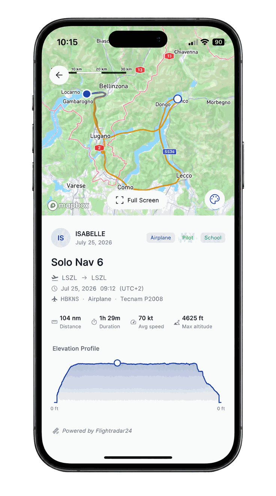
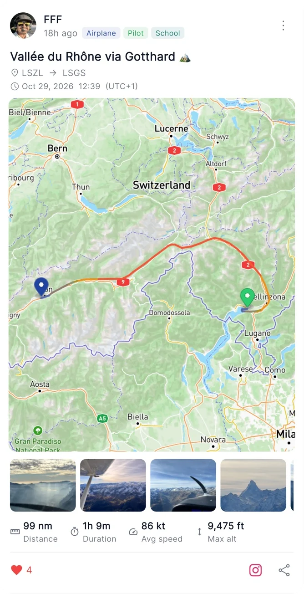
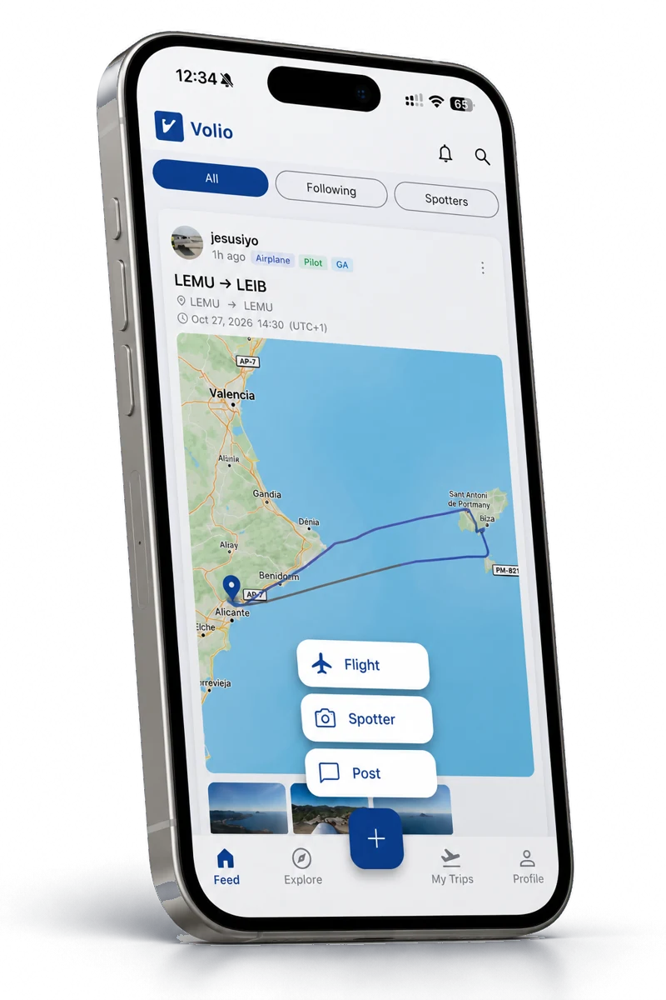

The social network for aviation. Type your registration and Volio tracks the flight for you: route on the map, distance, time, speed and altitude, with your photos and notes on it. Post a photo or a few words on their own. Share what you shoot from the fence. Follow the people you fly with.

Enter a tail number and Volio fills the flight in. Have something to say without one? Post it anyway.

Enter your registration and Volio pulls your route, speed, altitude and duration automatically, then plots the exact track you flew with departure and arrival pins. No manual entry, ever.
Add a title, a personal note and your own photos to every flight, give your adventure the context it deserves.
Not everything needs a flight behind it. A thought, a photo from the ramp, a question for the crew: post it straight to the feed.
Search for pilots, crew and enthusiasts by name, follow them, and keep up with where they have been flying.
The community reacts to each other's flights and shares them in one tap, building a real aviation network.

Take off as usual. After you land, just look up your registration, the ADS-B integration captures it for you.
Your flight appears on the feed with its title, your photos and the track. No flight today? Post a photo or a few words on their own.
Let friends and colleagues see your latest flight. It could spark the idea for their next adventure.
Volio started with the flights you fly. It now covers the people who photograph them, and the organisations behind them.
A feed of its own for the people on the other side of the fence. Post your shot, link it to the tail number and the aircraft, and it lands on your spotter profile alongside everything else you have caught.
See how spotting works →Flight schools, clubs, operators and aviation brands get a verified account, an audience that is only aviation, text and photo posts, and a link people can actually tap. Registrations are open.
See the organisation plan →Volio is a platform to connect friends, colleagues, instructors and crew, everyone in the aviation community. Every flight you share is a new way to bring people together.
It’s just a nice way to show your flight route and potentially have it as an inspiration for upcoming cross-country flights.
It’s a fresh idea with huge potential, it can appeal to many different kinds of people in aviation.
What I like is how easy it is to upload flights. You type the aircraft registration and all the data loads by itself.
With auto-tag, my photos reach the pilots who were actually flying. Seeing a pilot approve a shot of their own landing is the best feedback a spotter can get.
Finally one place to show the photos from my flights, right on the route I flew, instead of leaving them lost in my camera roll.
On Volio my content reaches people who genuinely love aviation. It’s exactly the audience I want to talk to.
It’s like Strava for pilots. I can share my flight track straight to my Instagram Stories, my students love seeing where we flew, and it takes seconds.
After you land, you enter your aircraft's registration. Volio matches it against publicly broadcast ADS-B flight data to reconstruct your route, ground speed, altitude profile and duration, so the whole flight fills itself in.
Pilots, cabin crew, passengers, spotters, and everyone who works in or loves aviation. Whether you're a student on your first solo, an airline first officer, a passenger with a window seat, or someone at the fence with a long lens, every flight has a story worth sharing.
Yes. Every flight takes a title, a personal note and your own photos, so the card is the flight as you experienced it, not just the data behind it.
Yes. Posts can be text, a photo, or both, and they go straight to the feed without a flight attached. The flight card is there when you have flown; the post is there when you have something to say.
A feed built for aviation photographers rather than for the people on board. You post a shot, link it to the aircraft's registration and type, and it appears on the spotter feed and on your spotter profile. Read more about spotting on Volio.
Yes. Volio matches spotters' photos to your flight using the flight time, the location and the registration. You get a notification, and a photo only appears on your profile and in the Volio feed once you approve it. You can also send a tag request on a photo a spotter has already uploaded. How Spotter × Pilot matching works.
Yes. Volio exports your flight as a sticker with your track on it, ready to add to your Instagram stories.
Volio is free to download and start sharing your flights. Just grab it from the App Store or Google Play and log in.
You control what you share. Every flight can be posted to the community feed or kept to yourself, the choice is always yours, flight by flight.
Yes. Organisation accounts are open: a verified profile, text and photo posts to an audience that is only aviation, and a tappable link, with the plan and price built around what you need. See what an organisation account includes.
Yes. Every flight you add stays on your profile with its route, distance, duration, speed and altitude, so you build up a visual record of where you have flown and can scroll back through it any time. It is a personal flight log to share, not a replacement for your official pilot logbook.
Volio is available now on both iOS and Android, download it from the App Store or Google Play and your flights sync across the community instantly.
We work with organisations across the aviation world. More announcements on the way.
Behind-the-scenes updates, flight stories, and the journey of building Volio, follow along on Instagram.
Follow on InstagramBuilding the social layer for aviation, one flight at a time. Follow our company page for product milestones, team updates, and the vision behind Volio.
Connect on LinkedInFree to download. Type a registration, add your photos, and put the flight in front of the people who understand what it took to fly it.